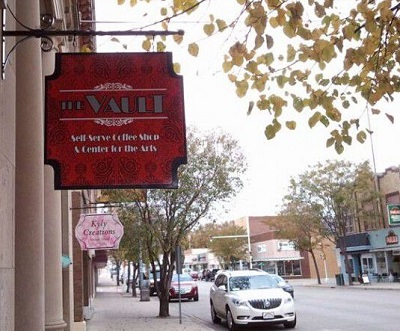

美国全自助咖啡屋无店员服务 需顾客自觉付账
国际在线专稿：据美国odditycentral网站6月30日报道，美国北达科他州河谷市（Valley City）的Vault咖啡屋提供全自助服务，这里没有服务员，顾客需要自己动手泡咖啡，然后刷信用卡或将现金投入存款槽付帐走人。咖啡店的收入完全依赖于顾客的诚实。
店主大卫·布雷克（David Brekke）与妻子金伯利（Kimberly）于2013年10月份开了这家咖啡屋，他们完全相信顾客的诚实，依赖“荣誉系统”——即相信人们为了自身荣誉不会逃单，来提供全自助服务。尽管他们还未达到收支平衡，但那不是因为有人偷钱或耍赖。实际上，15%的顾客更加慷慨。

据悉，全自助咖啡店的氛围很好，除了必备的饮料及点心外，布雷克还在店内放置了许多精选书籍、2架钢琴以及用于出售的艺术品。此外，布雷克还将一面墙改造成电影屏幕，每周六晚7点半播放电影，而这一切只需花费3美元（约合人民币18元）。
这种全自助服务吸引了许多回头客。顾客勒罗伊·特里鲍德（LeRoy Triebold）说：“这是个很好的地方，它很安静，越来越多的人喜欢来这里。”
顾客玛德琳·卢克（Madeline Luke）说：“这里实在太方便了，大多数顾客都非常诚实。”河谷市只有6000多人口，几乎每个人都互相认识，因此不可能有人在其他人面前偷窃。而荣誉系统让顾客们感觉良好，给了他们自我肯定的机会。布雷克表示：“其他地方能开荣誉系统咖啡店吗？只有河谷市的好人让全自助店成为现实。”（沈姝华）